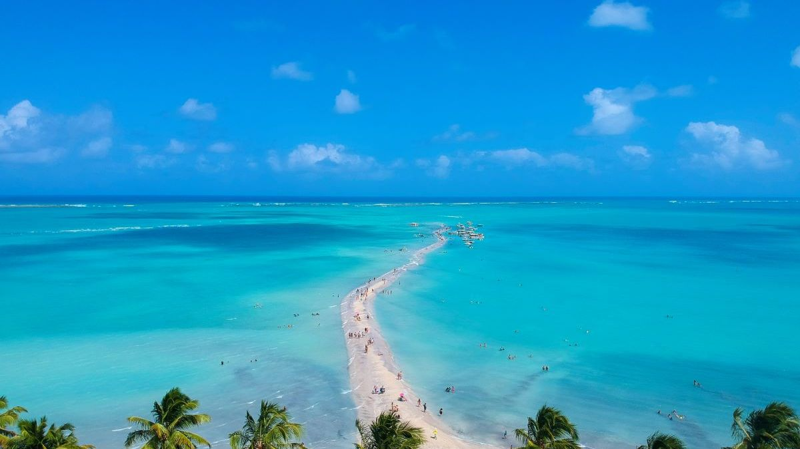
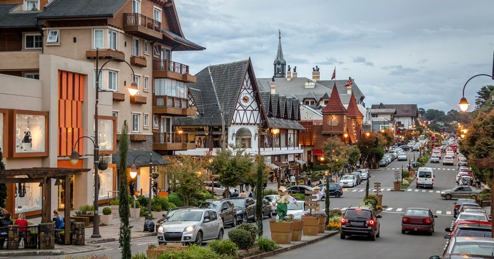

Pacata e simples, Maragogi se tornou, pouco a pouco, um dos mais desejados destinos do Nordeste. Seu litoral faz a região ser conhecida como o Caribe Brasileiro e suas piscinas naturais quando conhecidas em um bonito dia de sol e em época de maré baixa, surpreendem pelas águas cristalinas e refrescantes. É uma boa dica para quem quer paz ou ficar em um belo resort all inclusive, como o Salinas Maragogi, sem se preocupar com mais nada.
Já bastante conhecida entre os turistas brasileiros e até estrangeiros, Jericoacoara é uma vila pequena na beira do mar, que está em uma região de dunas e próxima de lagoas de águas cristalinas. É um destino com vários hotéis e pousadas, ótimos restaurantes e que promete dias com lindos fins de tarde a partir da Duna do Pôr-do-Sol, que é uma das atrações da vila. Para quem gosta de velejar, é um lugar ótimo e para quem ainda não veleja, pode ser uma boa oportunidade para começar o esporte!

Gramado é um dos melhores destinos no Brasil e uma cidade que oferece excelente estrutura, enorme variedade de atrativos, ótima gastronomia e que tem povo acolhedor, tornando a experiência na cidade sempre inesquecível. É um local para pessoas de todas as idades, que sempre tem algo novo para fazer ou uma nova atração para conhecer! É uma cidade que ganhou o gosto dos brasileiros e que sempre vale a pena voltar!
 " frameborder="0">